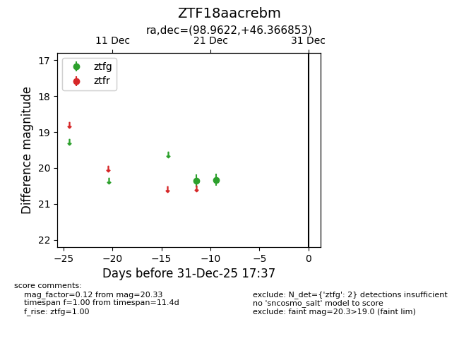
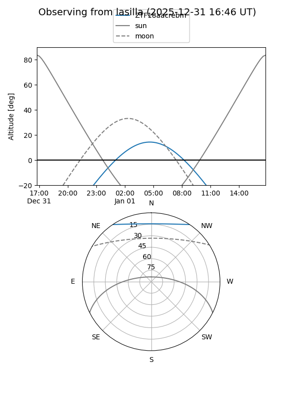
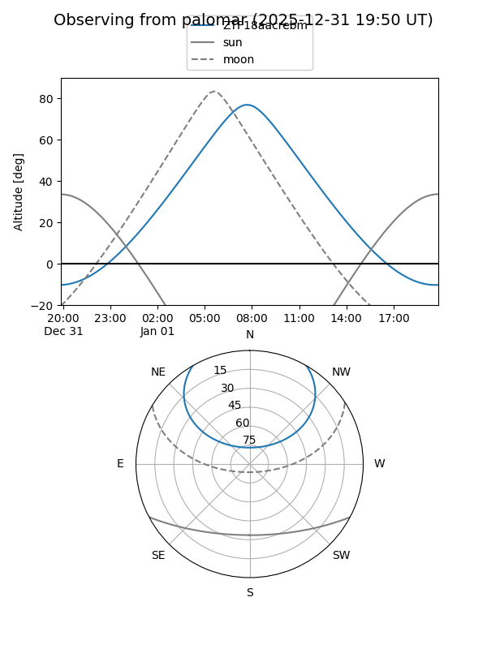

ZTF18aacrebm
Target ZTF18aacrebm at 2025-12-31 17:00
Aliases and brokers:
FINK:
Lasair:
ALeRCE:
alt names
ZTF18aacrebm (ztf,fink_ztf)
Coordinates:
equatorial (ra, dec) = 98.9622,+46.36685
equatorial (HMS+DMS) = 06:35:50.93,+46:22:00.67
galactic (l, b) = (168.9012,+16.75549)
Flags:
Photometry:
last ztfg=20.33
2 ztfg detections
Lightcurve

Visibility


Additional plots